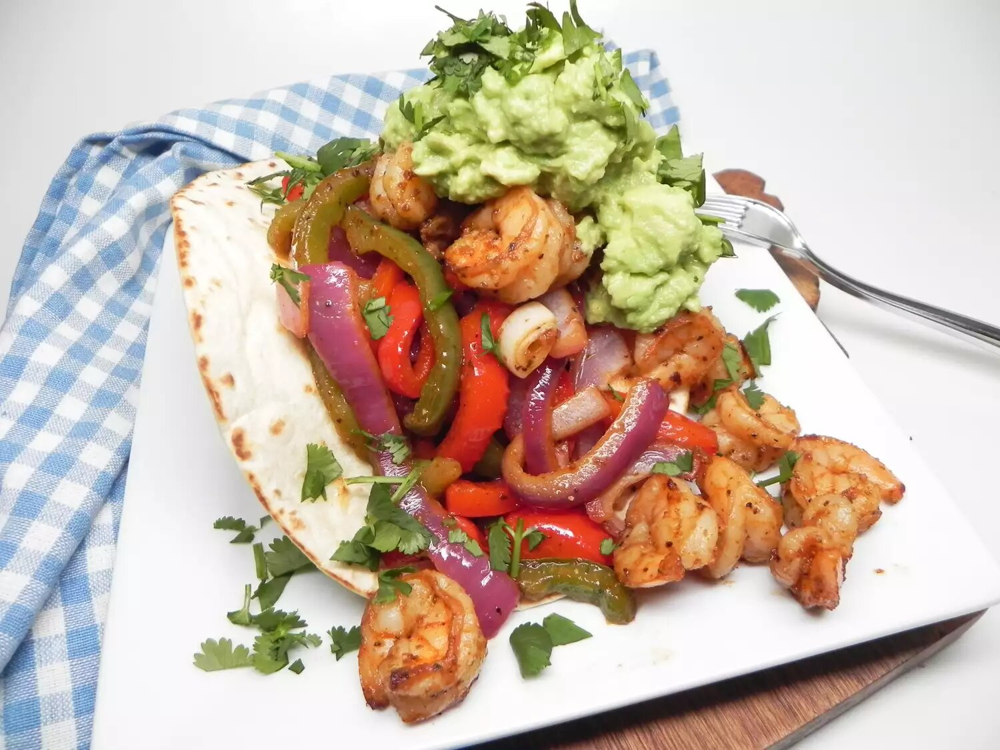

Air Fryer Shrimp Fajitas

Description
These air fryer shrimp fajitas are simple to make. Garnish with guacamole and cilantro if desired.
Ingredients
- 1 red bell pepper, sliced into thin strips
- 1 green bell pepper, sliced into thin strips
- 1 large onion, sliced into thin strips
- 1 large fresh jalapeno pepper, sliced
- 2 ½ teaspoons fajita seasoning mix, divided
- 1 teaspoon olive oil
- 12 ounces raw large shrimp, peeled and deveined
- 1 tablespoon lime juice
- 8 (6 inch) fajita-size flour tortillas
Steps
- Preheat an outdoor grill for medium-high heat and lightly oil the grate.
- Place bell pepper strips, onion, and jalapeno slices in a large bowl. Add 2 teaspoons of fajita seasoning and olive oil. Stir until evenly combined.
- Place shrimp in a separate bowl. Add remaining 1/2 teaspoon fajita seasoning and lime juice. Gently stir until evenly combined.
- Place vegetable mixture in a grill basket. Grill for 10 minutes. Stir in shrimp and grill for 5 minutes more. Remove basket from the grill.
- APlace tortillas on the grill and toast for 2 minutes. Divide filling between the tortillas and serve.